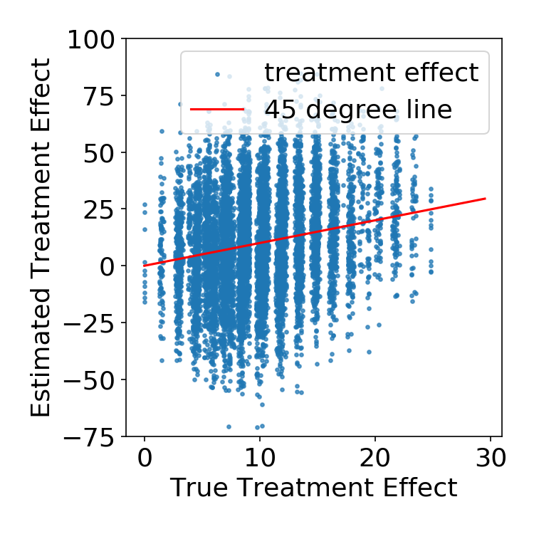
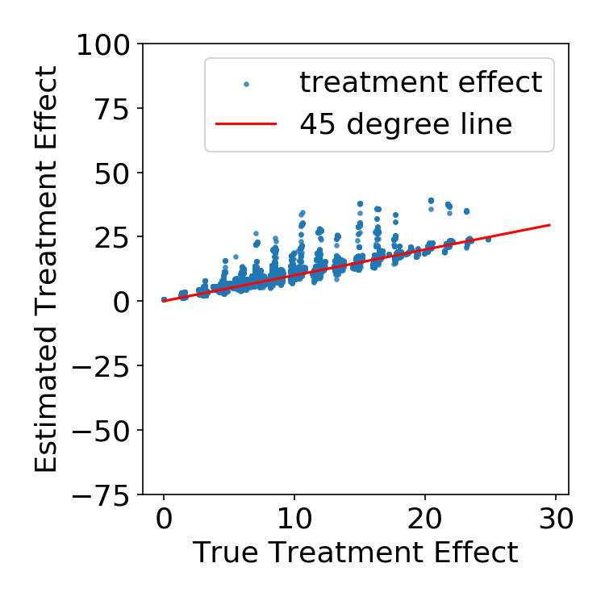
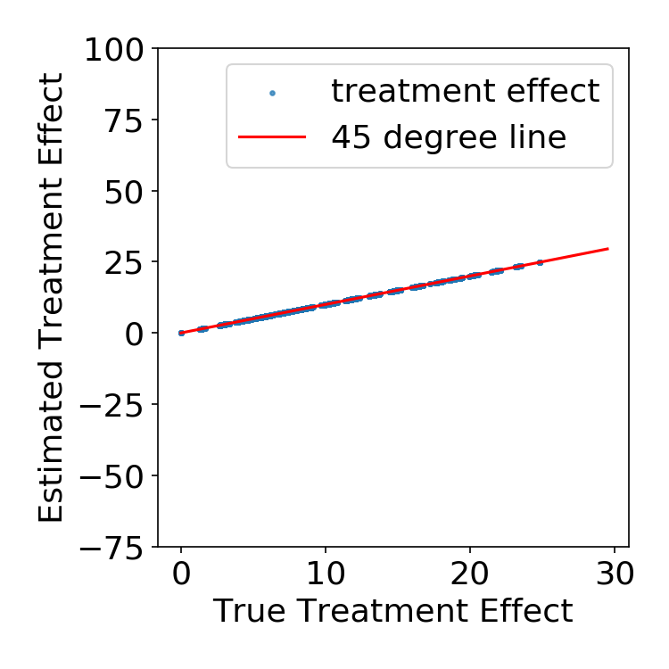
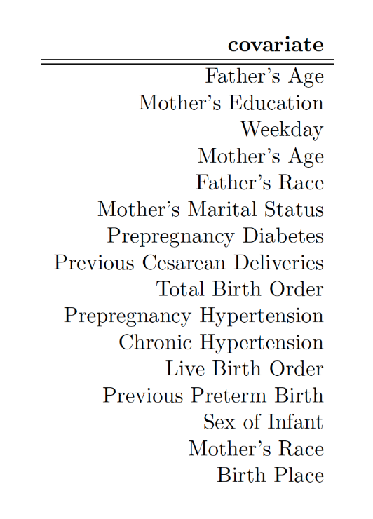
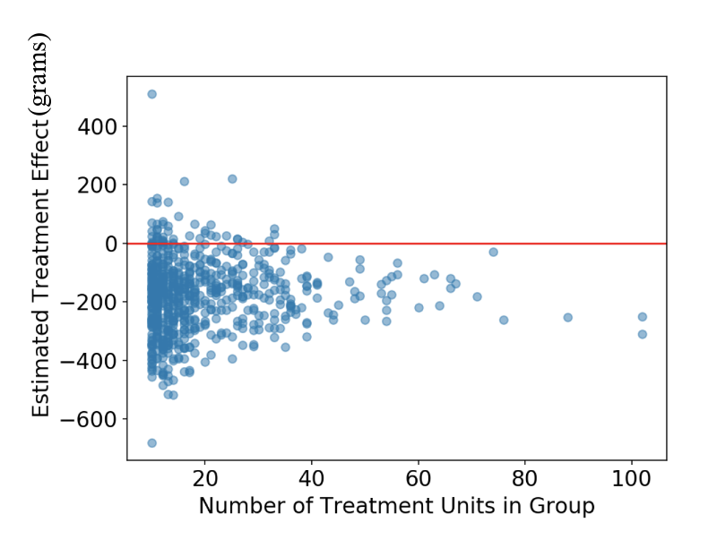
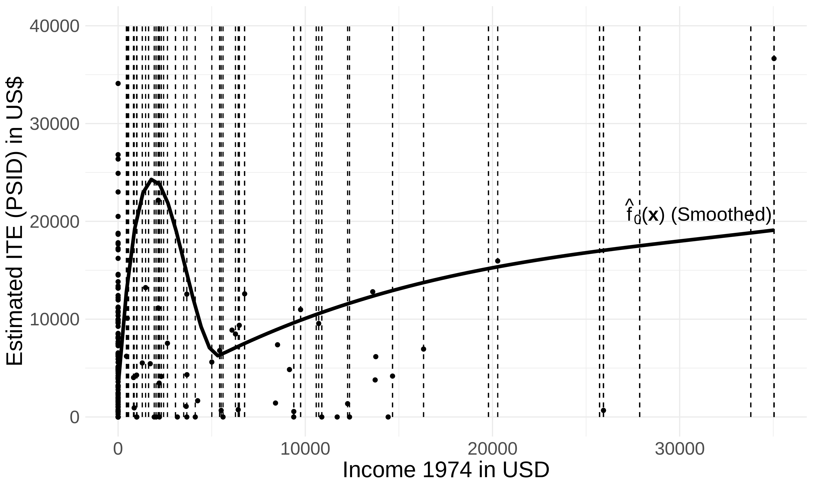
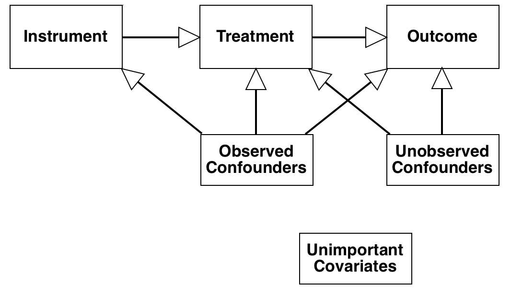
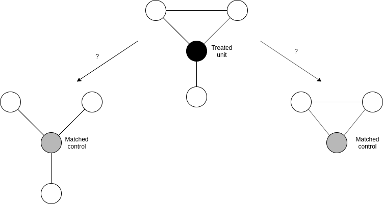

Almost Matching Exactly
For Interpretable Treatment Effect Estimation
| Marco Morucci |
Duke University |
marco.morucci@duke.edu
Treatment Effects and High-Stakes Decisions
Causal Estimates are increasingly used to justify decisions in all sectors...
| Politics |
Business |
Healthcare |
Goal: We want to provide decision-makers with trustworthy causal estimates that produce justifiable estimates.
Treatment effect estimation
Setting: Observational Causal Inference
- We have a set of $N$ units
- They have potential outcomes $Y_i(1), Y_i(0)$
- They are associated with a set of contextual covariates, $\mathbf{X}_i$
- They are assigned either treatment $T_i=1$ or $T_i=0$
- We observe $Y_i = T_iY(1) + (1-T_i)Y_i(0)$
- We would like to know: $$CATE(\mathbf{x}_i) = \mathbb{E}[Y_i(1) - Y_i(0)|\mathbf{X_i = \mathbf{x}_i}]$$
- Assume SUTVA, Overlap, ignorability
All methods presented here can also be applied to experimental data, for example, to analyze treatment effect heterogeneity.
Treatment effect estimation
How do we estimate a quantity that's half unobserved?
We can under two main assumptions
- Conditional Ignorability $(Y_i(1), Y_i(0))$ is independent of $T_i$ conditional on $\mathbf{X}_i$
- SUTVA: Unit $i$ is exclusively affected by its own treatment
Matching in a nutshell
Matching allows us to take advantage of CI and SUTVA to estimate the CATE in an interpretable way.
- For each unit, $i$ find several other units that are similar in the covariate values.
- Form a Matched Group (MG) with all the units matched to $i$
- Estimate the CATE for $i$ with $$\widehat{CATE}_i = \frac{1}{N^t_{MG}}\sum_{i \in MG}Y_iT_i - \frac{1}{N^c_{MG}}\sum_{i \in MG}Y_i(1-T_i)$$
Why matching?
We choose matching to estimate CATEs because matching is interpretable and interpretability is important
- Interpretability permits greater accountability of decision-makers in high-stake settings
- Interpretability allows researchers to debug their models, datasets and results
- Interpretability makes results from Machine Learning tools more trustworthy to human observers
Matching is interpretable because estimates are case-based
"We came up with that estimates because we looked at these similar cases."
But is case choice interpretable in existing methods?
Case-based estimation is good, but can we do better?
- Most popular matching methods match on an uniterpretable single-number summary (propensity, prognostic score) of the covariates

- Case choice is unexplainable!
- We want to be able to explain why two units were matched together
But do existing matching methods produce accurate CATE estimates?
Matching estimates can be inaccurate
- Complex and flexible ML methods are likely to make better predictions than simple matches
- Can we bridge the gap between methods?
The rest of this talk will cover
Almost Matching Exactly
A family of matching methods that:
- Make explainable matched groups
- Rely on flexible ML to make accurate predictions
- Are fast in most applied settings
- Can be scaled up to massive datasets in some cases
Two Algorithms
- FLAME for scalable matching on discrete data
- AHB for accurate matching on continuous data
Almost Matching Exactly
With Discrete Covariates
Given a unit, choose a set of units with the opposite treatments to match it to.
Ideally, we would match it to units with exactly the same covariates
Problem: There are no exact matches on all covariates!
Solution: Make an Almost-Exact Match on the most important covariates.
Almost Matching Exactly
With Discrete Covariates
Step 1 Split your data into a training set and a matching set, the latter containing the unit you wish to match.

Almost Matching Exactly
With Discrete Covariates
Step 2 Using Machine Learning on the training set, figure out which covariates predict the outcome best
Almost Matching Exactly
With Discrete Covariates
Step 2 Using Machine Learning on the training set, figure out which covariates predict the outcome best

Almost Matching Exactly
With Discrete Covariates
Step 3 Find the set of covariates that maximizes cumulative weight, and permits an exact match with at least one other unit.
 |
|
We should match on Age and Height!
Almost Matching Exactly
With Discrete Covariates
Step 4 Match that unit exactly on that set of covariates with as many other units as possible.

That's it!
Almost Matching Exactly
Formally
\[\begin{align} &\boldsymbol{\theta}_i^* \in \text{arg}\max\limits_{\boldsymbol{\theta} \in \{0,1\}^p} \mathbf{w}^T\boldsymbol{\theta}\\ &\text{s.t.:}\, \exists j:\, T_j\neq T_i,\text{ and, } \mathbf{x}_j \circ \boldsymbol{\theta} = \mathbf{x}_i \circ \boldsymbol{\theta}. \end{align}\]
- $\boldsymbol{\theta}_i$ = covariate selector
- $\mathbf{w}$ = covariate weights, training set variable accuracy in our case
"Among all the subsets of covariates for which there exists at least one exact match with opposite treatment, choose the one that maximizes total weight."
AME targets estimation error
The CATE estimation error for AME can be upper-bounded as:
\[|\widehat{CATE}(\mathbf{x}_i) - CATE(\mathbf{x}_i)| \leq 2M\mathbf{w}^T(1-\boldsymbol{\theta}_i)\]
- $\mathbf{w}^T(1-\boldsymbol{\theta}_i)$ is the opposite of $\mathbf{w}^T\boldsymbol{\theta}_i$
- AME maximizes $\mathbf{w}^T\boldsymbol{\theta}_i$
AME minimizes this upper bound on estimation error.
Fast Large Scale Almost Matching Exactly
(FLAME)
[Wang, Moruccy, Awan, Liu, Roy, Rudin, Volfovsky (JMLR 2021)]
- Solves the AME problem very quickly on massive amounts of data
- Can be implemented natively on SQL databases
- No free lunch: FLAME's solution to AME is approximate
- ...but not too far from the optimum.
The FLAME Algorithm
- Estimate covariate weights on training set
- Make as many exact matches as possible, remove matched units from matching set
- Remove the lowest-weight covariate
- Repeat until either:
- No more unmatched units are left
- Combined predictive accuracy of remaining covariates dips below threshold (recommended)
A SQL Implementation
FLAME's performance: simulated data
- 20K Units, half treatment, half control
- 30 covariates, only 10 matter
- Irrelevant covariates affect treatment assignment but not outcome
- Nonlinear outcome model with interaction term
FLAME's performance: simulated data
- $N^t = N^c = 10,000$, $P = 30$
- \[y = \sum_{i=1}^{10}\alpha_ix_i + T\sum_{i=1}^{10}\beta_ix_i + T\sum_{i=1}^5\sum_{j = i}^5 x_ix_j\] for $i = 1, \dots, 10 $ (relevant covariates)
- $x_i \sim Ber(0.5)$
- $\beta_i \sim N(1.5, 0.15)$
- $s \sim Unif(-1, 1), \alpha_i \sim N(10s, 1)$
- $x_i \sim TBer(0.9) + (1-T)Ber(0.1)$
- $\alpha_i = 0$, $\beta_i = 0$
for $i = 11, \dots, 30$ (irrelevant covariates)
Simulation Results
FLAME vs. other matching methods
| FLAME | True Pscore Match |
 |
 |
Simulation Results
FLAME vs. other matching methods
| FLAME | True Pscore Match |
|
Simulation Results
FLAME vs. other matching methods
| FLAME | Genetic Match |
|
 |
Simulation Results
FLAME vs. other matching methods
| FLAME | Mahalanobis Match |
|
 |
Simulation Results
FLAME vs. uninterpretable ML
| FLAME | Causal Forests |
|
 |
Simulation Results
FLAME vs. uninterpretable ML
| FLAME | CTMLE |
|
 |
Simulation Results
FLAME vs. uninterpretable ML
| FLAME | BART |
|
 |
How does FLAME scale?
| Method | Time for N=20K (sec) | Time for N=1.2M (hr) |
|---|---|---|
| FLAME | 22.30 | 1.33 |
| Causal Forest | 59.68 | Crashed |
| PScore Match | 13.88 | > 10 |
| Genmatch | > 150 | > 10 |
| Cardinality Match | > 150 | > 10 |
An AME Application: Smoking and Pregnancy
|
 |
An AME Application: Smoking and Pregnancy
|
 |
An AME Application: Smoking and Pregnancy
|

|
AME widh discrete data and FLAME: summary
- When exact matching on all covariates isn't possible, matching exactly on a subset of covariates is a good solution
- Covariates subsets to match on are chosen with flexible ML tools on a separate training set
- Resulting algorithm is accurate, fast and interpretable
AME with Continuous Covariates
Problem: do we find almost exact matches when covariates are continuous?
Solution: Coarsening (binning) variables and then using them as inputs for AME seems like a natural solution...
More problems: ...but how do we know how much to coarsen each variable?
Carefully Coarsening Covariates
Consider the problem of having to bin a covariate, $x$
| Fixed boxes | Adaptive boxes |
 |
Takeaways
- Relationship between $x$ and $y$ should be considered when binning
- Even so, optimal-but-fixed width bins are not enough, because...
- Different parts of the covariate space should be binned according to variance of $y$
Takeaways
- Relationship between $x$ and $y$ should be considered when binning
- Even so, optimal-but-fixed width bins are not enough, because...
- Different parts of the covariate space should be binned according to variance of $y$
Adaptive HyperBoxes
[Morucci, Orlandi, Roy, Rudin, Volfovsky (UAI 2020)]
An algorithm to adaptively learn optimal coarsenings of the data that satisfy these criteria.
The AHB Algorithm
Step 1: On a separate training set, fit a flexible ML model to predict both potential outcomes for each unit in the matching set.

The AHB Algorithm
Step 2: Construct a p-dimensional box around each unit, such that, in the box:
|
 |
The AHB Algorithm
Step 2: Construct a p-dimensional box around each unit, such that, in the box:
|
 |
The AHB Algorithm
Step 2: Construct a p-dimensional box around each unit, such that, in the box:
|
 |
The AHB Algorithm
Step 2: Construct a p-dimensional box around each unit, such that, in the box:
|
 |
The AHB Algorithm
Step 3: Match together units that are in the same box

That's it!
AHB Formally
\[\min_{\mathbf{H}} Err(\mathbf{H}, \mathbf{y}) + Var(\mathbf{H}, \mathbf{y}) - n(\mathbf{H})\]
where:
- $\mathbf{H}$ is the hyper-box we want to find
- $Err(\mathbf{H}, \mathbf{y})$ is the outcome prediction error for all points in $\mathbf{H}$
- $Var(\mathbf{H}, \mathbf{y})$ is the outcome variance between points in $\mathbf{H}$
- $n(\mathbf{H})$ is the number of points in $\mathbf{H}$
AHB Formally
In practice, we solve, for every unit, $i$:
\[\min_{\mathbf{H}_i} \sum_{j=1}^n \sum_{t=0}^1 w_{ij}|\hat{f}(\mathbf{x}_i, t) - \hat{f}(\mathbf{x}_j, t)| - \gamma\sum_{j=1}^n w_{ij}\]
- $w_ij$ denotes whether unit $j$ is contained in box $i$
- $\hat{f}(\mathbf{x}, t)$ is the predicted outcome
This function controls all terms previously introduced.
Two solution methods for AHB
An exact solution via a MILP formulation
- Can be solved by any popular MIP solver (CPLEX, Gurobi, GLPK...)
- Simple preprocessing steps make solution relatively fast
Two solution methods for AHB
A fast approximate algorithm
- Determine which unit is closest in absolute distance along each covariate
- Expand the box in the direction with the lowest predicted outcome variance
- Repeat until a desired threshold of matches or loss is met
AHB Performance
Test case: Lalonde data
- Effect of training program on income
- Several samples, two observational (PSID, CPS), one experimental (NSW)
- Idea: match experimental treated units (N=185) to observational controls (N>2000) to recover experimental estimates.
- Matching covariates: Age, Education, Prior income, Race, Marital status
AHB Performance
Test case: Lalonde data
Who gets closest to experimental?
| Method | CPS sample | PSID sample |
|---|---|---|
| Experimental | 1794$ | 1794$ |
| AHB | 1720$ | 1762$ |
| Naive | -7729 | -14797 |
| Full Matching | 708 | 816 |
| Prognostic | 1319 | 2224 |
| CEM | 3744 | -2293 |
| Mahalanobis | 1181 | -804 |
AHB Performance
| Recall: ideally, adaptive bins would look like this: | |
| AHB outputs these bins on the Lalonde data: |  |
Pretty close to the theoretical ideal!
Are our Matches interpretable?
AME/AHB matches vs. Pscore matches
| Age | Education | Black | Married | HS Degree | Pre income | Post Income (outcome) |
| Treated unit we want to match | ||||||
| 22 | 9 | no | no | no | 0 | 3595.89 |
| Matched controls: prognostic score | ||||||
| 44 | 9 | yes | no | no | 0 | 9722 |
| 22 | 12 | yes | no | yes | 532 | 1333.44 |
| 18 | 10 | no | no | no | 0 | 1859.16 |
| Matched controls: AHB | ||||||
| 22 | 9 | no | no | no | 0 | 1245 |
| 20 | 8 | no | no | no | 0 | 5862.22 |
| 24 | 10 | yes | no | no | 0 | 4123.85 |
Are our Matches interpretable?
AHB Interactive output
Extensions of the AME framework
The AME framework has already been extended to...
| Instrumental Variables
[Awan, Liu, Morucci, Roy, Rudin, Volfovsky (UAI 2019)] |
 |
| Network Interference
[Morucci, Orlandi, Roy, Rudin, Volfovsky (AISTATS 2020)] |
 |
Extensions of the AME framework
...but there are many other natural avenues:
- Matching with non-standard data such as text or images
- Matching with spatio/temporal data
- AME for difference-in-differences estimation
- ...and more!
Currently we're working on:
- Constructing estimators for matched groups that are asymptotically well-behaved
- Using matching to facilitate sensitivity analysis in massive observational datasets
Extensions of the AME framework
...but there are many other natural avenues:
- Matching with non-standard data such as text or images
- Matching with spatio/temporal data
- AME for difference-in-differences estimation
- ...and more!
Currently we're working on:
- Constructing estimators for matched groups that are asymptotically well-behaved
- Using matching to facilitate sensitivity analysis in massive observational datasets
Software
https://almost-matching-exactly.github.io/Conclusion
Interpretability of causal estimates is important!
- We propose matching methods that produce interpretable and accurate CATE estimates
- Our methods take advantage of machine learning backends to boost accuracy
- Our methods explain both estimates in terms of cases, and why cases were selected in terms of covariate similarity.
Thank You!
Questions?
- Me: https://marcomorucci.com/ | marco.morucci@duke.edu
- AME Lab: https://almost-matching-exactly.github.io/
- FLAME Paper: https://arxiv.org/abs/1707.06315
- AHB Paper: https://arxiv.org/abs/2003.01805